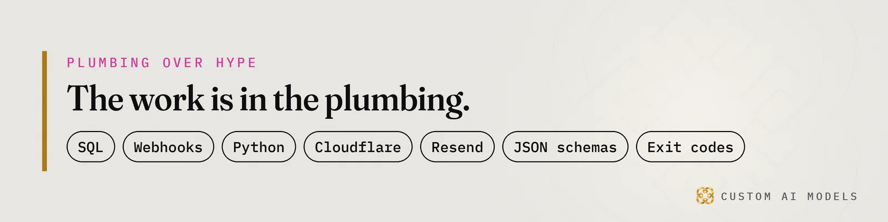
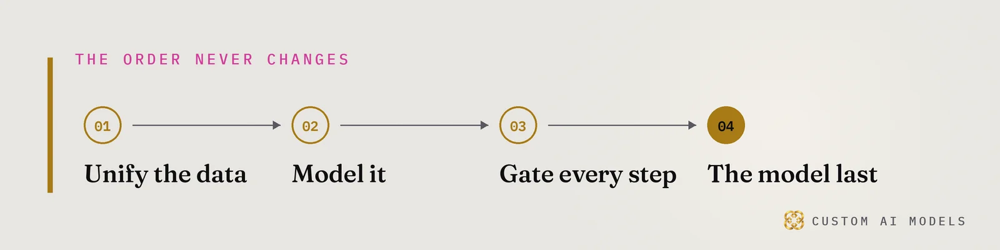

Custom AI Models
Custom AI Models Yeriko Vargas · Founder, Custom AI Models · Oct 2026
Yeriko Vargas · Founder, Custom AI Models · Oct 2026Short answer. B2B HVAC distributors near Birmingham MI win AI recommendations by fixing data before anything else. Buyers ask ChatGPT and Copilot who to call, and those answers name a few firms. Clean order, stock and refrigerant records feed commercial HVAC estimating and workflow automation, and they give engines facts to cite. Custom AI Models builds that layer.
Why do AI answers skip most B2B HVAC distributors near Birmingham MI?
Buyers now ask ChatGPT, Copilot and Google's AI answers who to call, and the answer names a few firms and skips the rest. B2B HVAC distributors near Birmingham MI feel this first, because a contractor's question is specific: who stocks this part, who ships today, who carries my refrigerant. The engine picks the firms it can read. Everyone else vanishes.
The click is dying too. Pew Research (2025) found Google users clicked a result in 8% of visits when an AI summary appeared, versus 15% without one. Users clicked a source link inside the AI summary in only 1% of those visits. Pew also found 53% of searches of ten words or more triggered an AI summary. Long, specific questions are exactly how a contractor searches.
- Ahrefs (2025): AI Overviews line up with a 34.5% lower click-through rate for the top-ranking page.
- Gartner (February 2024): predicted traditional search engine volume would drop 25% by 2026 as AI chatbots take over answers.
That forecast date is this year. Engines lift passages they can read. A distributor whose site holds a part list as a scanned PDF, or a brand page with no stock facts, gives them nothing to lift. Our piece on how AI search names contractors shows what the engine reads first.

What does staying invisible cost a commercial HVAC firm?
Staying invisible costs you the shortlist, and the shortlist is where the big accounts get picked. High-ticket client acquisition for HVAC contractors is the query owners type, and the answer names a handful of firms. For a distributor, the high-ticket account is the mechanical contractor with a standing parts program. That account never reaches your counter if the engine cannot read you.
- Accounts you never knew were shopping.
- Phone calls that go to the firm the engine named.
- Quotes that slow down because your own records disagree.
Look at the cost in operations terms. Estimators wait on stock answers. Counter staff re-key orders a contractor already sent. Account managers chase a refrigerant record that lives in someone's inbox. Each of these is a data problem first, and each shows up outside as a site the engines cannot parse.
Nobody sends a notice. The loss is silent, which is why it lasts.
How do HVAC wholesalers in Oakland County automate repeat contractor orders?
Wholesalers automate repeat contractor orders by unifying order, stock and account data first, then letting software propose the reorder for a human to approve. The model comes last. Contractors reorder the same parts on a rhythm, and a clean order history shows that rhythm. A messy ERP export hides it.
Start where the mess lives: spreadsheets, ERP exports, part numbers typed three different ways. Yeriko Vargas has 8.5 years in data, and the pattern holds in every build. Dirty data turns an assistant into a legal and financial liability. Our write-up on wholesale inventory data covers the counter side, and ERP automation for repeat orders covers the reorder side.
- Unify part numbers, units and contractor accounts into one table.
- Model the reorder pattern for each account.
- Gate every proposed order with a deterministic validation gate: schema check, stock check, price check.
- Put the model last, to draft and explain.
Gates decide what ships. A reorder proposal that fails the stock check never reaches the contractor, and the failure is logged with its reason. Telemetry on those failures shows where the data drifts. That log tells you more than any prompt about whether the system is ready for a model.

Commercial HVAC estimating and workflow automation on checked data
Commercial HVAC estimating and workflow automation fails when the inputs disagree. A quote that pulls list price from one sheet and stock from another is a guess with a logo on it. We build the pipeline in Python, validate each step against a JSON schema, and fail loudly on an exit code instead of passing a bad number forward. That is the system we would build for a distributor.
Refrigerant compliance and tracking software for distributors needs the same base: one record for each sale, tied to a contractor account and a date. With that record, a report becomes a query. Without it, someone rebuilds the trail by hand. Our piece on AI data readiness explains why this order never flips.
Custom AI Models has no HVAC client on record yet. We speak as the builder of the system, and this section describes the design we build.
The HVAC SEO + GEO Doctor: where Custom AI Models starts
Custom AI Models runs an HVAC SEO + GEO Doctor that checks whether Google and AI engines can find, read and recommend a firm. It reads your pages the way an engine does and reports what is missing. It gets a firm started. We sell the work, and nobody can sell you a ranking, so we do not try. The GEO vs SEO checklist lists the first checks to run.
Custom AI Models began in 2022. Founder Yeriko Vargas builds in one order: unify the data, model it, gate every step, the model last. Plumbing carries the result: SQL, webhooks, Python, JSON schemas. Boutique work for Metro Detroit founders and operators stays small on purpose, so discretion stays intact.
Questions people ask
Do we need to replace our ERP before AI helps a distributor?
No. The first step reads what you already have: ERP exports, spreadsheets, order emails. Custom AI Models unifies those into one clean table and puts validation gates on it. Replacing the ERP is a separate decision, and clean data makes that decision cheaper whichever way it goes.
Can anyone guarantee our firm gets named by ChatGPT or Copilot?
No. Nobody outside the labs has the ranking formula, and anyone selling a guaranteed placement is guessing. You control what the engine finds when it arrives: clear pages, specific facts, consistent records. We sell that work and check it, never a position.
What does the HVAC SEO + GEO Doctor actually check?
It checks whether Google and AI engines can find, read and recommend your firm. That means whether your pages are crawlable, whether your parts, brands and service facts sit in plain text, and whether passages can be lifted whole. The output is a list of gaps to fix.
What data should a distributor gather before building anything?
Collect order history, part number lists, contractor account records and any refrigerant sale logs, even if they sit in messy spreadsheets. Messy is fine. Unknown is the problem. Once we know where each record lives, we can unify it and decide which workflow to automate first.